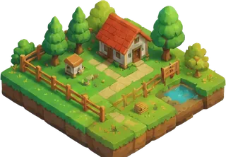

Farm Reader · read-only
Checking…

—seeds
—plots
—animals
Copy capture moves the farm to a Bioplot page in another browser (paste it under “Paste a capture”). Diagnostics and raw are for bug reports. Reset wipes every capture from this profile.